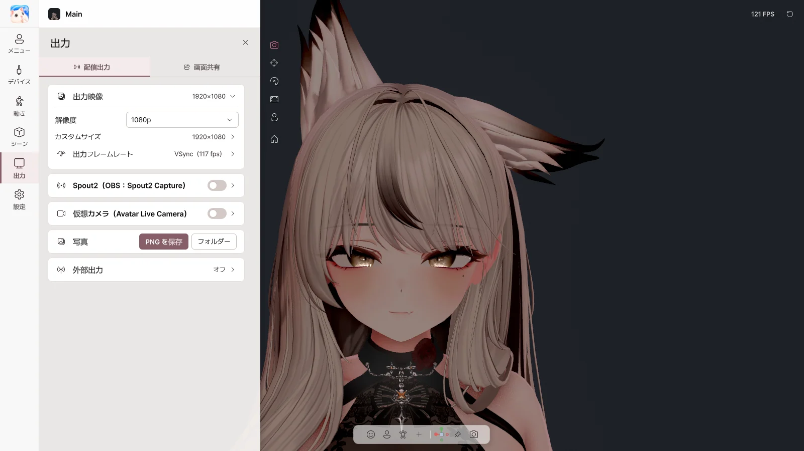

9. 出力#
出力 ページでは、アバターの映像をほかのソフトに送ります。タブは 配信出力 と 画面共有 の 2 つです。
| 送り先 | 方法 |
|---|---|
| OBS（透明背景） | Spout2 |
| Discord · Zoom · Teams のカメラ | 仮想カメラ |
| Discord でのゲーム配信 | 画面共有 |
| ほかのモーションアプリ | VMC 出力 |
| 写真 | PNG を保存 |
出力されるのはアバターと背景だけで、Avatar Live のメニューは出力されません。ウィンドウを最小化したりトレイに隠したりしても出力は続きます。
配信出力#

出力映像#
| 項目 | 内容 |
|---|---|
| 解像度 | 720p · 1080p · 1440p · 4K · 縦 |
| カスタムサイズ | 好きなサイズ |
| 出力フレームレート | 出力のフレームレート |
Basic は 1080p までで、ウォーターマークが表示されます。Pro は 4K までで、ウォーターマークはありません。
Spout2 → OBS#
- Spout2 をオンにします。
- OBS に Spout2 プラグイン をインストールし、Spout2 Capture ソースを追加して Avatar Live を選びます。
- 透明背景：Avatar Live の背景を 透明 にし、OBS で Composite with alpha を選びます。
| 項目 | 内容 |
|---|---|
| 送信名 | OBS に表示される名前 |
| 透明度（アルファ）を送る | 透明背景を送る |
仮想カメラ#
- 最初に一度だけ 仮想カメラをインストール… を押します（管理者権限を求められます）。
- 仮想カメラ をオンにします。
- Discord・Zoom などで、カメラとして Avatar Live Camera を選びます。
| 項目 | 内容 |
|---|---|
| 映像を左右反転 | 左右を反転 |
| 「Avatar Live Camera」として登録し直す… | カメラ名が違って表示されるとき |
- Discord は起動時にしかカメラを探しません。一覧にない場合は Discord を完全に終了してから起動し直してください。
- 透明背景には対応していません（クロマキー背景を使ってください）。
- インストールフォルダーを移動・削除する前に、
VirtualCamera\Uninstall.batを実行してください。
写真#
PNG を保存 で UI なしの画面を保存し、フォルダー で保存フォルダーを開きます。透明背景は透明のまま保存されます。
外部出力（VMC）#
| 項目 | 内容 |
|---|---|
| VMC 出力（ほかのアプリへ） | アバターのポーズと表情をほかのアプリに送る |
| アドレス / ポート | 受信側アプリのアドレス |
| ブレンドシェイプ | 表情も一緒に送る |
VMC 出力は正常に動作する見込みですが、受信側のアプリが開発者の環境でまだテストされていない 実験的機能 です。
画面共有#

Discord のフレンドには ゲーム + アバター + 音声 を、自分にはゲームだけを見せます。OBS は不要です。
使い方#
- 共有する対象 で ゲーム または ディスプレイ を選びます。
- 画面共有 をオンにします。
- Discord で 画面共有 → アプリケーション → Avatar Live Share Output を選び、サウンドをオンにします。
- プレビューでアバターの位置とサイズを合わせます。
⚠️ Avatar Live を 管理者として実行しないでください。 Discord に黒い画面が表示されます。
共有の状態#
| 項目 | 内容 |
|---|---|
| 画面共有 | オン / オフ |
| 解像度 / フレームレート | Discord に送る画質 |
共有する対象#
| 項目 | 内容 |
|---|---|
| ゲーム | 共有するゲームのウィンドウを選ぶ（ゲームを再起動しても再び見つけます） |
| ディスプレイ | モニター全体を共有 |
| ほかのソース（Pro） | ウィンドウやモニターをさらに重ねる（11 章） |
💡 ゲームが黒く映る場合は、ゲームを ボーダーレスウィンドウ または ウィンドウモード に変えてみてください。
オーディオ#
| 項目 | 内容 |
|---|---|
| ゲーム音 | ゲームの音だけを送る（Discord の通話・通知音は除く） |
| デスクトップ音声 / 追加したアプリのみ / 音声なし | ディスプレイ共有のときに送る音 |
| + アプリを追加 | 音楽などほかのアプリの音を加える、アプリごとの音量 |
共有の音を送るには、Steam Streaming Speakers や VB-Audio CABLE のような、自分では聞かない仮想再生デバイスが必要です。
アバターオーバーレイ#
| 項目 | 内容 |
|---|---|
| アバターオーバーレイ | 共有画面にアバターを表示 |
| プレビュー | ドラッグで移動、角でサイズ変更、ハンドルで回転、Alt + 端でトリミング |
| ↙ ↓ ↘ ↖ ↗ ◎ | クイック配置 |
| 大きさ / 不透明度 / 回転 | 数値で調整 |
| 反転とスナップ | 左右・上下反転、比率の固定、位置合わせ |
| ⛶ | 大きな画面で編集 |
詳細#
| 項目 | 内容 |
|---|---|
| キャプチャ方式を固定 | 自動 / ウィンドウ / ディスプレイ |
| ソースのトリミング | 共有画面を切り抜く |
| Discord オーディオデバイス | 共有の音を再生するデバイス（ヘッドホン・スピーカーは選ばないでください） |
| 音声の遅延 | 映像と音を合わせる |